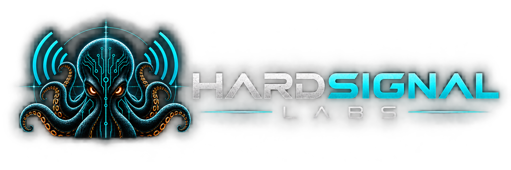

Independent cyber-physical security research. Where radio, firmware and silicon meet — direction finding, fault injection, side-channel analysis and protocol work, on instrumented hardware.
Public research projects, grouped by discipline. Each is a real build with methodology and results — not demos.
RF sensing, direction finding, event analysis and IQ feature extraction with a 5-channel KrakenSDR. Controlled RF fingerprint research against known and owned sources.
Coherent direction-of-arrival measurement and the build write-up for the 5-channel array.
Bare-metal ISO14443A / ISO-DEP NFC platform on STM32 + ST25R3916B, instrumented across SWD, SPI and IRQ with J-Link and Saleae.
STM32 Nucleo-F446RE with ChipWhisperer Husky — trigger and ADC capture for fault-injection and side-channel experiments on a dedicated target.
Python control for the bench — Rigol DP832 supply, Siglent SDL1030X load and SDS1104X-U scope — for repeatable, automated measurement.
HardSignal Labs is the independent research work of an engineer in Liverpool, UK, working across the boundary between radio, embedded systems and hardware.
The focus is cyber-physical security: understanding how physical signals and embedded devices can be observed, measured and tested — with a research discipline of working against controlled, owned or authorised sources.
Open to conversations about RF, embedded and hardware-security work.